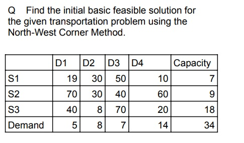

| S_No |
Question |
Answer (Not a full answer - write your own) |
| 211 |
Can you explain how the concept of Operations Research applies to real-world problem-solving? |
Operations Research (OR) is a field that uses mathematical models, data analysis, and optimization techniques to solve complex problems and improve decision-making. It helps businesses and organizations use resources efficiently, reduce costs, and maximize performance. OR is applied in areas like supply chain management, manufacturing, healthcare, and finance to improve scheduling, resource allocation, and overall operations.
|
| 212
| In what ways does Linear Programming function, and what are its practical limitations? | Linear
Programming (LP) is a mathematical method used to find the best
possible outcome, such as maximum profit or minimum cost, in a given
situation with limited resources. It works by creating a set of
equations or inequalities that represent constraints and an objective
function to optimize. LP is widely used in business, economics, and
engineering for tasks like resource allocation, production scheduling,
and cost minimization. However, it has limitations, such as assuming
linear relationships, requiring precise data, and not handling complex
real-world situations with uncertainty or non-linear factors
effectively.
|
| 213
| Explain the process of solving a Linear Programming Problem (LPP) using the graphical method. | The
graphical method of solving a Linear Programming Problem (LPP) involves
plotting constraints as linear equations on a graph and identifying the
feasible region where all constraints overlap. The objective function,
which needs to be maximized or minimized, is evaluated at the corner
points of this region. The optimal solution is found at the point that
gives the best value for the objective function. This method is useful
for LPPs with two variables, as it provides a clear visual
representation of possible solutions. However, for more complex
problems with multiple variables, other methods like the simplex method
are used.
|
| 214
| Question:
Mr. Mistry owns a small shop called "Mistry Furniture Shop" and deals with only two items—tables and chairs.
Total Budget: Rs 50,000
Storage Limit: 60 pieces
Cost & Profit per Item:
- Table: Cost = Rs 2,500, Profit = Rs 250
- Chair: Cost = Rs 500, Profit = Rs 75
Based on this information, answer the following:
- Define the decision variables clearly.
- Formulate the objective function to maximize profit.
- Write down the constraints based on the given budget and storage limits.
(Do not solve the problem; just formulate the Linear Programming Problem.)
| Decision Variables:
Let:
x = Number of tables purchased
y = Number of chairs purchased
Objective Function (Maximize Profit):
Maximize Z = 250x + 75y
Constraints:
1. Budget Constraint: 2500x + 500y ≤ 50000
2. Storage Constraint: x + y ≤ 60
3. Non-Negativity Constraint: x ≥ 0, y ≥ 0
|
| 215
| What is the Simplex Method in Linear Programming? Explain its basic purpose and when it is used. | The
Simplex Method is an algorithm used to solve Linear Programming
Problems (LPPs) involving more than two decision variables. It is an
iterative procedure that helps find the optimal solution by moving
along the edges of the feasible region.
Purpose:
The Simplex Method is used to maximize or minimize an objective
function (such as profit or cost) subject to a set of linear
constraints.
When is it used?
When the graphical method is not feasible (i.e., for problems with more
than two variables).
When there are multiple constraints and a systematic approach is needed
to find the best solution efficiently.
|
| 216
| Question (5 Marks)
A company produces two products, A and B.
The production is limited by available resources. The company wants to
determine the feasible region based on the given constraints.
Let:
x = Number of units of Product A
y = Number of units of Product B
The production is limited by the following constraints:
1. Labor Constraint: 2x + 4y ≤ 40
2. Material Constraint: 3x + 2y ≤ 30
3. Non-Negativity Constraint: x ≥ 0, y ≥ 0
Instructions:
- Plot the given constraint equations on a graph.
- Identify and shade the feasible region that satisfies all constraints.
(Do not solve the problem; only graph the feasible region.)
| Hint:
To plot the constraint equations, follow these steps:
1. Convert each inequality into an equation (replace ≤ with =).
2. Find the x-intercept and y-intercept for each equation by setting one variable to zero and solving for the other.
3. Draw the lines for each equation on a graph.
4. Identify the region that satisfies all inequalities and shade it as the feasible region.
Example for 2x + 4y ≤ 40:
- Set x = 0 → 4y = 40 → y = 10 (y-intercept)
- Set y = 0 → 2x = 40 → x = 20 (x-intercept)
- Plot the points (0,10) and (20,0) and draw the line.
Repeat this process for the second equation, then shade the common feasible region.
|
| 217
| Analyze the importance of constraints in determining the feasibility and optimality of a Linear Programming Problem (LPP).
| Constraints
play a crucial role in determining the feasibility and optimality of a
Linear Programming Problem (LPP). They define the limits within which
the solution must be found, such as resource availability, production
capacity, or budget restrictions. By analyzing constraints, we can
identify the feasible region, which represents all possible solutions
that satisfy the given conditions. Constraints also influence the
optimal solution, as the objective function (maximization or
minimization) is evaluated within this restricted space. If constraints
are too restrictive, they may lead to no feasible solution, while loose
constraints may result in multiple optimal solutions. Therefore,
analyzing constraints helps in understanding how limitations impact
decision-making and solution strategies in LPP.
|
| 218
| Based
on the solution of a Linear Programming Problem (LPP), conclude what an
optimal solution represents and explain its significance in
decision-making.
| An
optimal solution in Linear Programming represents the best possible
outcome that maximizes or minimizes the objective function while
satisfying all given constraints. It is the most efficient allocation
of resources under the given limitations. By analyzing the final
solution, one can conclude whether the available resources are being
used effectively to achieve the desired goal, such as maximizing profit
or minimizing cost. The significance of an optimal solution lies in its
ability to provide decision-makers with a structured approach to
problem-solving, ensuring that business operations or resource
management strategies are as efficient as possible.
|
| 219
| Analyze
a real-life business scenario and conclude how Linear Programming can
be applied to optimize resources and decision-making.
| In
a manufacturing company, Linear Programming can be applied to optimize
production planning. Suppose a factory produces two types of products
with limited raw materials, labor hours, and budget. By formulating a
Linear Programming model, the company can determine the optimal number
of each product to manufacture in order to maximize profit while
ensuring resource constraints are not exceeded. Analyzing this scenario
allows us to conclude that Linear Programming helps businesses make
data-driven decisions, improve efficiency, and allocate resources
effectively, leading to better financial and operational outcomes.
|
| 220
| Examine the concepts of bounded and unbounded solutions in Linear Programming and determine their impact on decision-making.
| In
Linear Programming, a bounded solution occurs when the feasible region
is enclosed, meaning there is a clear limit within which the optimal
solution exists. This ensures that the objective function, whether
maximizing profit or minimizing cost, reaches a definite optimal value.
On the other hand, an unbounded solution occurs when the feasible
region extends infinitely in at least one direction, implying that the
objective function can increase or decrease indefinitely without
reaching a maximum or minimum value. By examining these concepts, we
can determine that a bounded solution provides a practical and
implementable decision, whereas an unbounded solution may indicate
missing constraints or unrealistic assumptions in the problem
formulation.
|
| 221
|
 |
Total cost after following all the steps will be 95 + 60 + 180 + 120 + 280 + 280 = 1015.
|
| 222
| Q. Find the feasible solution for the given transportation problem using the North-West Corner Method.
| W1 | W2 | W3 | W4 | Supply |
| F1 | 14 | 25 | 45 | 5 | 6 |
| F2 | 16 | 25 | 35 | 55 | 8 |
| F3 | 35 | 3 | 65 | 15 | 16 |
| Demand | 4 | 7 | 6 | 13 |
|
| To
solve a transportation problem using the North-West Corner Method
(NWCM) and determine the total transportation cost, follow a structured
approach. First, identify the given data, including the supply values
(sources) and demand values (destinations), along with the
transportation cost matrix. The cost matrix represents the
transportation cost per unit between different sources and
destinations.
Next, apply the North-West Corner Method by starting at the top-left
(north-west) corner of the matrix. Allocate as many units as possible
to that cell based on the minimum of supply and demand. Adjust the
supply and demand values accordingly. If a demand is fully met, move to
the next column; if a supply is exhausted, move down to the next row.
Repeat this process until all supplies and demands are satisfied,
ensuring that all units are allocated efficiently.
Once the allocations are made, calculate the total transportation cost
by multiplying the allocated units in each cell by their corresponding
transportation cost. Sum up all the computed values to obtain the final
transportation cost. While the North-West Corner Method provides a
feasible solution, it may not always be optimal. Additional
optimization methods, such as the Least Cost Method (LCM) or the MODI
Method, can be used to further refine the solution and achieve cost
efficiency.
|
| 223
| Q. Find the initial basic feasible solution using the North-West Corner Method.
| D1 | D2 | D3 | Supply |
| S1 | 4 | 8 | 8 | 76 |
| S2 | 16 | 24 | 16 | 82 |
| S3 | 8 | 16 | 24 | 77 |
| Demand | 72 | 102 | 41 |
|
| To
find the initial basic feasible solution using the North-West Corner
Method, start at the top-left corner and allocate as many units as
possible based on the minimum of supply and demand. Adjust the supply
and demand values accordingly, moving right when demand is met and
downward when supply is exhausted. Continue this process until all
supplies and demands are satisfied. Finally, compute the total
transportation cost by multiplying allocated units by their respective
costs and summing the values.
|
| 224
| Q. Find the initial basic feasible solution using the North-West Corner Method.
| D1 | D2 | D3 | Supply |
| S1 | 4 | 8 | 8 | 72 |
| S2 | 16 | 24 | 16 | 102 |
| S3 | 8 | 16 | 24 | 41 |
| Demand | 76 | 82 | 77 |
|
| To
find the initial basic feasible solution using the North-West Corner
Method, start at the top-left corner and allocate as many units as
possible based on the minimum of supply and demand. Adjust the supply
and demand values accordingly, moving right when demand is met and
downward when supply is exhausted. Continue this process until all
supplies and demands are satisfied. Finally, compute the total
transportation cost by multiplying allocated units by their respective
costs and summing the values.
|
| 225
| Q. Find the initial basic feasible solution for the given transportation problem using the Least-cost Method.
| D1 | D2 | D3 | D4 | Capacity |
| S1 | 19 | 30 | 50 | 10 | 7 |
| S2 | 70 | 30 | 40 | 60 | 9 |
| S3 | 40 | 8 | 70 | 20 | 18 |
| Demand | 5 | 8 | 7 | 14 | 34 |
| To
find the initial basic feasible solution using the Least-Cost Method,
begin by identifying the cell with the lowest transportation cost in
the cost matrix. Allocate as many units as possible to that cell based
on the minimum of supply and demand. Adjust the supply and demand
accordingly, then move to the next least-cost cell. Repeat this process
until all supply and demand constraints are satisfied. Finally,
calculate the total transportation cost by multiplying the allocated
units with their respective costs and summing the values.
|
| 226
| Q. Find the initial basic feasible solution for the given transportation problem using the Least-cost Method.
| W1 | W2 | W3 | Supply |
| F1 | 16 | 20 | 12 | 200 |
| F2 | 14 | 8 | 18 | 160 |
| F3 | 26 | 24 | 16 | 90 |
| Demand | 180 | 120 | 150 |
|
| To
find the initial basic feasible solution using the Least-Cost Method,
begin by identifying the cell with the lowest transportation cost in
the cost matrix. Allocate as many units as possible to that cell based
on the minimum of supply and demand. Adjust the supply and demand
accordingly, then move to the next least-cost cell. Repeat this process
until all supply and demand constraints are satisfied. Finally,
calculate the total transportation cost by multiplying the allocated
units with their respective costs and summing the values.
|
| 227
| Find the initial basic feasible solution for the given transportation problem using Vogel's Approximation Method.
| D1 | D2 | D3 | D4 | Supply |
| O1 | 11 | 13 | 17 | 14 | 250 |
| O2 | 16 | 18 | 14 | 10 | 300 |
| O3 | 21 | 24 | 13 | 10 | 400 |
| Demand | 200 | 225 | 275 | 250 |
|
| To
solve the given transportation problem using Vogel's Approximation
Method (VAM), start by calculating the penalty for each row and column.
The penalty is the difference between the two lowest costs in that row
or column. Identify the highest penalty, and allocate as many units as
possible to the lowest-cost cell in that row or column based on the
minimum of supply and demand. Adjust the supply and demand accordingly
and recalculate penalties for the remaining rows and columns. Repeat
this process until all supply and demand constraints are satisfied.
Finally, compute the total transportation cost by summing up the
product of allocated units and their respective costs.
|
| 228
| Analyze
the Transportation Problem in Operations Research by evaluating its
objective, key components, and real-world applications. Provide
relevant examples to support your analysis.
| The
Transportation Problem in Operations Research is a type of optimization
problem that focuses on finding the most cost-effective way to
transport goods from multiple sources (suppliers) to multiple
destinations (demand points) while meeting supply and demand
constraints. The objective is to minimize the total transportation cost
while ensuring that supply and demand are balanced. Key components of
the problem include supply at each source, demand at each destination,
and the transportation cost per unit between each source-destination
pair. This method is widely used in logistics, supply chain management,
and distribution planning to optimize resource allocation and reduce
operational costs.
|
| 229
| Critique
the Transportation Problem in Operations Research by evaluating its
objective, key components, and real-world applications. Discuss its
advantages and limitations in practical scenarios.
| The
Transportation Problem in Operations Research is a type of optimization
problem that focuses on finding the most cost-effective way to
transport goods from multiple sources (suppliers) to multiple
destinations (demand points) while meeting supply and demand
constraints. The objective is to minimize the total transportation cost
while ensuring that supply and demand are balanced. Key components of
the problem include supply at each source, demand at each destination,
and the transportation cost per unit between each source-destination
pair. This method is widely used in logistics, supply chain management,
and distribution planning to optimize resource allocation and reduce
operational costs.
|
| 230
| Express
your understanding of Balanced and Unbalanced Transportation Problems
in Operations Research. Describe their differences and explain how
unbalanced problems can be managed.
| A
Balanced Transportation Problem occurs when the total supply equals the
total demand, ensuring a straightforward allocation of resources. An
Unbalanced Transportation Problem arises when supply and demand are not
equal, requiring adjustments such as adding a dummy row or column to
balance the problem. To handle unbalanced cases, a dummy source or
destination with zero cost is introduced to equalize supply and demand.
This ensures the problem can be solved using standard transportation
methods like the North-West Corner Rule, Least-Cost Method, or Vogel’s
Approximation Method (VAM).
|
| 231
| Define
an optimality test in transportation problems. Describe the role of the
Modified Distribution (MODI) method in checking the optimality of a
solution. | An
optimality test in transportation problems checks whether a given
feasible solution is the best possible one. The Modified Distribution
(MODI) method helps in this by computing opportunity costs (or u-v
values) for allocated and unallocated cells. If all opportunity costs
are non-negative, the solution is optimal; otherwise, adjustments are
needed.
|
| 232
| Define the following special cases in transportation problems:
a) Multiple solutions
b) Maximization case
c) Unbalanced case | a)
Multiple solutions – A transportation problem has multiple solutions
when there are two or more different optimal solutions with the same
total cost.
b) Maximization case – In some cases, the objective is to maximize
profit or benefit instead of minimizing cost. The problem is converted
into a minimization problem by subtracting costs from a large constant.
c) Unbalanced case – When total supply does not equal total demand, the
problem is unbalanced. A dummy row (for extra demand) or a dummy column
(for extra supply) is added to balance it.
|
| 233
| Explain what an Assignment Problem is. Provide some real-world scenarios where the Assignment Problem can be applied.
| An
Assignment Problem is an optimization problem where tasks or resources
must be assigned to agents in a way that minimizes cost or maximizes
efficiency, ensuring that each task is assigned to exactly one agent.
It is commonly used in various real-world scenarios. For example,
companies use it to assign employees to jobs based on their skills and
efficiency. In manufacturing, it helps allocate machines to tasks to
minimize production time. Logistics companies apply it to assign
delivery drivers to routes, reducing fuel costs. Educational
institutions use it to schedule teachers to classes efficiently, and it
also helps in matching students to projects based on their preferences.
|
| 234
| Explain
how the Assignment Problem is a special case of the Transportation
Problem. Also, discuss some real-world scenarios where the Assignment
Problem is applied.
| The
Assignment Problem is a special case of the Transportation Problem
where the number of supply points (workers, machines, etc.) is equal to
the number of demand points (tasks, jobs, etc.), and each supply point
is assigned to exactly one demand point. In the Assignment Problem, the
cost matrix is usually a square matrix, and the goal is to minimize
total cost or maximize efficiency using methods like the Hungarian
Method.
In real-world scenarios, the Assignment Problem is applied in various
fields. For example, companies use it to assign employees to tasks
based on their skills and efficiency. In logistics, it helps assign
delivery drivers to routes to minimize fuel costs. Schools use it to
allocate teachers to classrooms efficiently, and hospitals apply it to
schedule doctors for shifts while balancing workload.
|
| 235
| What is project management, and why is it important in real-world projects?
| Project
management is the process of planning, organizing, and executing tasks
to achieve specific goals within a set timeline and budget. It is
essential in real-world projects because it ensures efficiency,
minimizes risks, optimizes resources, and delivers high-quality results
on time. Effective project management keeps teams aligned, controls
costs, and enhances overall success.answer 25
|
| 236
| How can project management principles be applied to analyze and solve challenges in real-world projects? | Project
management principles help analyze and solve real-world challenges by
breaking down tasks, identifying risks, optimizing resources, and
ensuring efficient execution. By applying structured planning,
teamwork, and problem-solving strategies, project managers can keep
projects on track, meet goals, and adapt to challenges effectively.
|
| 237
| In what ways can project management techniques be used to evaluate and address obstacles in real-world projects? | Project
management techniques help evaluate and address obstacles by
identifying risks, tracking progress, and optimizing resources. By
using structured planning, problem-solving, and continuous monitoring,
teams can adapt to challenges and ensure project success.
|
| 238
| Analyze how a Work Breakdown Structure (WBS) can be applied to organize and manage a real-world project effectively. | A
Work Breakdown Structure (WBS) helps analyze and manage a real-world
project by breaking it into smaller, manageable tasks. This improves
organization, resource allocation, and tracking, ensuring the project
stays on schedule and within budget.
|
| 239
| Evaluate the effectiveness of a Work Breakdown Structure (WBS) in organizing and managing complex real-world projects. | A
Work Breakdown Structure (WBS) is effective in organizing and managing
complex projects by breaking them into smaller, manageable tasks. This
improves clarity, resource allocation, and tracking, ensuring efficient
project execution and successful completion.
|
| 240
| Define
Cost Breakdown Structure (CBS) and Organization Breakdown Structure
(OBS) and identify their importance in project management.
| Cost
Breakdown Structure (CBS) is a hierarchical representation of a
project's total costs, dividing expenses into categories such as labor,
materials, and overhead. It helps in budgeting, cost control, and
financial planning.
Organization Breakdown Structure (OBS) defines the hierarchy of roles
and responsibilities within a project, ensuring clear accountability
and efficient communication among team members.
Both CBS and OBS are important in project management as they help
organize financial and human resources, improve efficiency, and ensure
successful project execution.
|
| 241
| State the meaning of project completion time and mention a project where meeting the deadline is essential. | Project
completion time is the total time required to finish a project from
start to end. It includes all tasks, dependencies, and deadlines needed
to complete the project successfully.
Example: Building a house may have a project completion time of 6
months, considering all construction phases, inspections, and final
touches.
|
| 242
| What
do you understand by project network representation? Explain its role
and significance in effective project management with suitable examples. | A
project network representation is a visual diagram that depicts the
sequence of activities in a project along with their dependencies. It
helps project managers plan, schedule, and monitor tasks efficiently.
This representation is crucial for identifying the critical path,
estimating project completion time, and ensuring proper resource
allocation, ultimately leading to better project execution.
|
| 243
| Identify
the concept of project network representation and explain its role and
significance in effective project management with suitable examples. | A
project network representation is a visual diagram that depicts the
sequence of activities in a project along with their dependencies. It
helps project managers plan, schedule, and monitor tasks efficiently.
This representation is crucial for identifying the critical path,
estimating project completion time, and ensuring proper resource
allocation, ultimately leading to better project execution.
|
| 244
| Describe
how to determine project completion time in a project network.
Demonstrate how this process supports efficient project management.
Provide a simple example to illustrate your explanation.
| To
determine the project completion time in a project network, identify
all tasks, their durations, and dependencies. Arrange them in a
sequence using a network diagram, such as a PERT or CPM chart.
Calculate the earliest and latest start and finish times for each task
using forward and backward passes. The longest path through the
network, known as the critical path, determines the project’s minimum
completion time.
This process helps in effective project management by identifying
critical tasks that directly affect the project timeline. Managers can
allocate resources efficiently, anticipate potential delays, and
implement corrective actions to keep the project on schedule.
For example, consider a simple project to build a small garden. The
tasks include preparing the soil (3 days), planting seeds (2 days),
watering daily for growth (5 days), and installing a fence (4 days). If
preparing the soil must be done before planting and watering must
follow planting, but the fence can be installed independently, the
critical path is preparing the soil → planting → watering, totaling 10
days. Since the fence is not on the critical path, delays in fence
installation will not affect the overall project completion time unless
it exceeds 10 days.
|
| 245
| Illustrate
the process of calculating project completion time in a project
network. Explain how this process enhances project management with a
simple example. | To
illustrate the process of calculating project completion time in a
project network, first, list all tasks, their durations, and
dependencies. Use a network diagram, such as a PERT or CPM chart, to
represent task sequences. Perform a forward pass to determine the
earliest start and finish times and a backward pass to find the latest
start and finish times. Identify the critical path, which is the
longest path through the network, as it determines the minimum project
duration.
This process enhances project management by helping managers identify
critical tasks, allocate resources effectively, and anticipate
potential delays. By focusing on tasks within the critical path, they
can ensure the project stays on schedule while managing flexibility in
non-critical tasks.
For example, consider a project to bake a cake. The tasks include
gathering ingredients (10 minutes), mixing the batter (15 minutes),
preheating the oven (10 minutes), baking (30 minutes), and decorating
(20 minutes). Since preheating and batter mixing can happen
simultaneously, the critical path is mixing → baking → decorating,
totaling 65 minutes. This means delays in non-critical tasks, like
gathering ingredients, won’t affect the total project completion time
unless they exceed the critical path duration.
|
| 246
| Examine
the various types of decisions involved in the decision-making process,
discussing their characteristics, significance, and real-world
applications. Provide relevant examples to illustrate how each type of
decision is applied in different scenarios. | There
are three main types of decisions in decision-making: strategic,
tactical, and operational. Strategic decisions are long-term and made
by top management, such as a company deciding to expand into a new
market. Tactical decisions are medium-term and support strategic goals,
like setting the pricing strategy for a new product. Operational
decisions are routine and deal with daily activities, such as
scheduling employee shifts in a retail store. Each type of decision is
essential for effective management and organizational success.
|
| 247
| Examine
the concept of a Payoff Table in decision analysis by explaining its
purpose and significance in evaluating decision alternatives. Construct
a simple Payoff Table using hypothetical data and analyze how it helps
decision-makers compare different choices under varying conditions to
maximize potential outcomes. | A
Payoff Table is a decision analysis tool that helps evaluate different
decision alternatives by displaying potential outcomes under various
conditions. It presents decision options in rows and possible states of
nature or scenarios in columns, with each cell showing the payoff
(profit, cost, or utility) for a specific combination of decision and
scenario.
For example, consider a business deciding whether to launch Product
A or Product B, with market conditions being either favorable or
unfavorable.
| Decision |
Favorable Market ($) |
Unfavorable Market ($) |
| Product A |
50,000 |
10,000 |
| Product B |
40,000 |
20,000 |
This table helps decision-makers compare potential gains and losses
under different scenarios. If the company is optimistic, it may choose
Product A due to its higher maximum payoff. If risk-averse, it might
prefer Product B, which has a better minimum outcome. By structuring
choices clearly, a Payoff Table allows for better strategic
decision-making based on data rather than intuition.
|
| 248
| Investigate
the concept of decision-making under uncertainty by analyzing its
characteristics and effects on decision outcomes. Discuss the key
challenges associated with this type of decision-making and evaluate
their impact on the overall decision-making process. | Decision-making
under uncertainty occurs when a decision-maker lacks complete
information about future outcomes, probabilities, or external factors
influencing the decision. Unlike decision-making under risk, where
probabilities are known, uncertainty involves unpredictable variables,
making it difficult to assess potential results accurately. One
major challenge in decision-making under uncertainty is the lack of
reliable data. Without historical trends or probabilities,
decision-makers must rely on intuition, experience, or assumptions,
increasing the risk of poor outcomes. Another challenge is the
complexity of evaluating multiple unknown factors, which can lead to
indecisiveness or biased judgments. Additionally, external factors such
as market fluctuations, technological advancements, and regulatory
changes can further complicate the decision-making process. Despite
these challenges, decision-makers can use techniques like scenario
analysis, sensitivity analysis, and decision trees to structure their
approach. By investigating possible alternatives and assessing their
potential impacts, they can make more informed choices, even in
uncertain environments.
|
| 249
| Justify
the importance of decision analysis in business operations by
evaluating its role in improving decision-making. Explain how tools
like the Payoff Table and Opportunity Loss Table contribute to making
better business decisions by minimizing risks and optimizing outcomes. | Decision
analysis is crucial for businesses as it provides a structured approach
to evaluating alternatives, reducing uncertainty, and improving
decision-making efficiency. It enables organizations to assess
potential risks, maximize opportunities, and allocate resources
effectively, leading to better strategic and operational outcomes.
The Payoff Table helps businesses compare different decision
alternatives under various scenarios by displaying potential outcomes.
By analyzing this table, decision-makers can identify the most
profitable or least risky option, depending on their risk appetite. For
example, if a company is considering launching a new product, a Payoff
Table can outline expected profits under different market conditions,
guiding them toward the best choice.
The Opportunity Loss Table, on the other hand, highlights the
potential losses incurred by not choosing the best alternative. It
helps businesses recognize the cost of missed opportunities and make
decisions that minimize regret. For instance, if a company must decide
between two investment projects, the Opportunity Loss Table can show
how much profit would be lost if the less optimal choice is made,
ensuring a more informed decision.
By using these tools, businesses can justify their decisions with
data-driven insights, avoid guesswork, and improve overall decision
quality, leading to long-term success and sustainability.
|
| 250
| Critique
the role of decision analysis in business by assessing its
effectiveness in guiding decision-making processes. Evaluate how tools
like the Payoff Table and Opportunity Loss Table help businesses make
better decisions by reducing uncertainty and improving outcome
optimization. | Decision
analysis is crucial for businesses as it provides a structured approach
to evaluating alternatives, reducing uncertainty, and improving
decision-making efficiency. It enables organizations to assess
potential risks, maximize opportunities, and allocate resources
effectively, leading to better strategic and operational outcomes.
The Payoff Table helps businesses compare different decision
alternatives under various scenarios by displaying potential outcomes.
By analyzing this table, decision-makers can identify the most
profitable or least risky option, depending on their risk appetite. For
example, if a company is considering launching a new product, a Payoff
Table can outline expected profits under different market conditions,
guiding them toward the best choice.
The Opportunity Loss Table, on the other hand, highlights the
potential losses incurred by not choosing the best alternative. It
helps businesses recognize the cost of missed opportunities and make
decisions that minimize regret. For instance, if a company must decide
between two investment projects, the Opportunity Loss Table can show
how much profit would be lost if the less optimal choice is made,
ensuring a more informed decision.
By using these tools, businesses can justify their decisions with
data-driven insights, avoid guesswork, and improve overall decision
quality, leading to long-term success and sustainability.
|
| 251
| Define the Opportunity Loss Table. How does it differ from the Payoff Table? Provide an example to illustrate your answer. | An
Opportunity Loss Table, also known as a Regret Table, helps
decision-makers assess the potential loss from not choosing the best
alternative. It compares each decision’s outcome to the highest
possible payoff in that scenario, highlighting missed opportunities.
Unlike a Payoff Table, which shows actual gains for each decision,
an Opportunity Loss Table focuses on the difference between the chosen
option and the best possible result. This allows businesses to minimize
regret and make more informed choices.
For example, if a company chooses between two investment options and
one yields lower profits than the other under certain market
conditions, the difference in earnings represents the opportunity loss.
By using this approach, decision-makers can evaluate risks more
effectively and select the option that reduces potential regret.
|
| 252
| Explain the basic elements of Game Theory and describe their significance in strategic decision-making with examples. | Game
Theory is a mathematical framework used to analyze strategic
interactions where the outcome for each participant depends on the
actions of others. The basic elements of Game Theory include players,
strategies, payoffs, and outcomes.
Players are the decision-makers in the game. Strategies refer to the
different choices available to each player. Payoffs represent the
rewards or consequences of a chosen strategy, and outcomes are the
final results based on the strategies chosen by all players.
For example, in a pricing competition between two companies, each
company (player) can choose to lower or maintain its prices (strategy).
If both lower prices, profits decrease (payoff), but if only one lowers
prices, that company gains a competitive advantage while the other
loses customers (outcome). Understanding these elements helps
businesses, governments, and individuals make optimal strategic
decisions.
|
| 253
| Recall the basic elements of Game Theory and describe their significance in strategic decision-making with examples. | The
basic elements of Game Theory are players, strategies, payoffs, and
outcomes, all of which shape decision-making in competitive situations.
Players are the individuals or entities making strategic choices.
Strategies represent the possible actions each player can take. Payoffs
are the rewards or penalties associated with different strategy
combinations. Outcomes result from the interaction of strategies chosen
by all players.
For instance, in a business rivalry, two competing firms may choose
to advertise or not. If both advertise, profits remain stable. If only
one advertises, it gains a larger market share. These elements interact
to influence decisions, as each player must anticipate the response of
others to maximize their payoff.
|
| 254
| Discuss
the role of players, strategies, payoffs, and outcomes in Game Theory.
How do these elements interact to influence decision-making? | The
basic elements of Game Theory are players, strategies, payoffs, and
outcomes, all of which shape decision-making in competitive situations.
Players are the individuals or entities making strategic choices.
Strategies represent the possible actions each player can take. Payoffs
are the rewards or penalties associated with different strategy
combinations. Outcomes result from the interaction of strategies chosen
by all players.
For instance, in a business rivalry, two competing firms may choose
to advertise or not. If both advertise, profits remain stable. If only
one advertises, it gains a larger market share. These elements interact
to influence decisions, as each player must anticipate the response of
others to maximize their payoff.
|
| 255
| Define
the importance of the Payoff Matrix in Game Theory and how it helps
decision-makers evaluate different strategies and predict possible
outcomes in business and economics. | The
Payoff Matrix in Game Theory defines the potential outcomes of
different strategies chosen by players in a competitive scenario.
It helps decision-makers evaluate various strategic options by
presenting possible rewards or losses associated with each choice.
By analyzing the matrix, businesses and economists can predict
competitor behavior, assess risks, and make informed decisions to
maximize benefits.
|
| 256
| Examine
what a two-person zero-sum game is in simple terms. Describe how one
player’s gain means the other player’s loss, and give an easy example
to show how this works.
| A
two-person zero-sum game is a situation where two players compete, and
whatever one player gains, the other loses by the same amount. The
total amount of rewards or losses in the game remains constant, meaning
one player’s success comes at the expense of the other.
For example, in a simple game of chess, one player wins, and the
other loses. There is no way for both to win or both to lose at the
same time. If Player A wins, Player B automatically loses, making it a
zero-sum situation.
This concept is used in real-life competitive situations like
business, sports, and military strategies, where one party’s advantage
often means another party’s disadvantage.
|
| 257
| Distinguish
between pure strategy and mixed strategy in games or decisions. Explain
them in a simple way and provide an example to show how they are
different. | A
pure strategy is when a player always chooses the same action in a
game, without changing it. They have a fixed plan and do not switch
strategies. For example, in rock-paper-scissors, if a player always
chooses "rock," that is a pure strategy.
A mixed strategy is when a player changes their choices and does not
stick to one action every time. They may use probabilities to decide
their moves. For example, in rock-paper-scissors, if a player randomly
picks rock, paper, or scissors each time, that is a mixed strategy.
The main difference is that pure strategy is predictable, while
mixed strategy involves randomness, making it harder for the opponent
to guess the next move.
|
| 258
| Justify
how a two-person zero-sum game applies to real-world competitive
situations. Provide an example, such as a rivalry between two companies
or a competition in sports, and explain why one player's gain results
in the other player's loss. | A
two-person zero-sum game is a situation where one player’s gain is
exactly equal to the other player’s loss. This concept is commonly seen
in competitive business environments and sports.
For example, consider two rival companies competing for market share
in the same industry. If Company A launches a new product and gains
customers, Company B loses those customers, reducing its sales. The
total market remains the same, so one company’s success directly causes
the other’s decline, making it a zero-sum game.
Similarly, in a sports match like tennis, if one player wins, the
other must lose. There is no possibility for both players to win
simultaneously. The total outcome remains constant, reinforcing the
idea of a zero-sum game.
These situations justify how strategic decision-making in
competitive environments follows the principles of a two-person
zero-sum game, where each move directly impacts the opponent’s outcome.
|
| 259
| Can
you argue whether the assumption in Game Theory that players are
rational decision-makers always holds true in real life? Can you think
of a situation where emotions or external factors might affect a
player’s choices?
| One
can argue that the assumption of rational decision-making in Game
Theory does not always hold true in real life. While the theory assumes
players act logically to maximize their benefits, human behavior is
often influenced by emotions, biases, and external pressures.
For example, in a negotiation, a person might accept a less
favorable deal due to fear of conflict or emotional attachment rather
than making the most rational choice. Similarly, in financial markets,
panic selling during a crisis often contradicts the rational goal of
maximizing long-term profits.
These examples highlight that while rationality is a useful
assumption in Game Theory, real-world decisions are frequently shaped
by psychological and situational factors.
|
| 260
| Defend
the use of the Payoff Matrix in real-life decision-making. Have you
ever faced a situation where you had to balance risks and rewards
before making a choice? Explain how the Payoff Matrix helps in
evaluating different options and why it is a useful tool for making
better decisions. | The
Payoff Matrix is a useful tool for analyzing decisions where risks and
rewards must be carefully considered. It helps individuals and
businesses compare different choices and predict possible outcomes
based on various scenarios.
For example, imagine you are deciding whether to take a new job with
a higher salary but more workload or stay in your current job with a
stable routine. The Payoff Matrix would list the possible outcomes of
each choice, helping you weigh the benefits of increased income against
the downside of added stress.
By using a Payoff Matrix, decision-makers can systematically
evaluate their options and make informed choices. This structured
approach defends the idea that decisions should not be made impulsively
but rather through careful consideration of all possible outcomes.
|
| 261
| 
| 
|
| 262
| 
| 
|
| 263
| 
| 
|
| 264
| 
| 
|
| 265
| 
| 
|
| 266
| 
| 
|
| 267
| 
| 
|